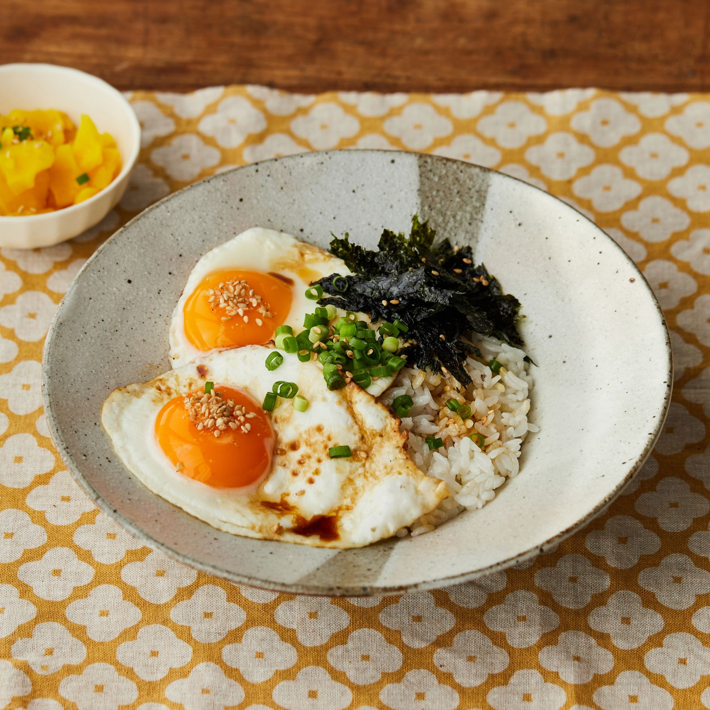
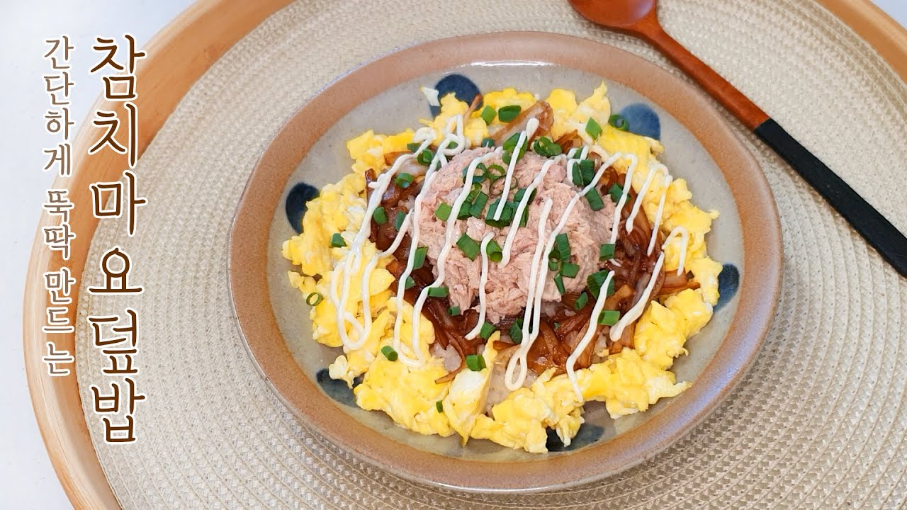

유튜브 레시피 영상
만개의 레시피
준비물 : 계란, 밥, 참기름, 간장
조리법
1. 계란을 후라이팬에 굽는다.
2. 원하는 정도로 익힌 후 밥 위에 얹는다.
3. 간장 한스푼, 참기름 한스푼을 첨가한다.
*여담: 일본의 경우 '메다마야키돈'(目玉焼き丼)이라 부르며 이름처럼 돈부리의 일종으로 취급한다.

유튜브 레시피 영상
만개의 레시피
준비물 : 참치 통조림, 마요네즈, 밥.
조리법
1. 참치 통조림의 기름을 전부 따라 버리고, 덩어리진 참치 살코기를 잘게 다진다.
2. 빈 용기에 부서진 참치 살을 넣고 마요네즈 외 다른 재료를 넣고 잘 버무린다.
3. 간장을 두 세 방울 떨어뜨려 준다.
*여담: 참치 대신 통조림 고등어/꽁치/닭가슴살 등 다른 통조림으로 만들어볼 수도 있다.